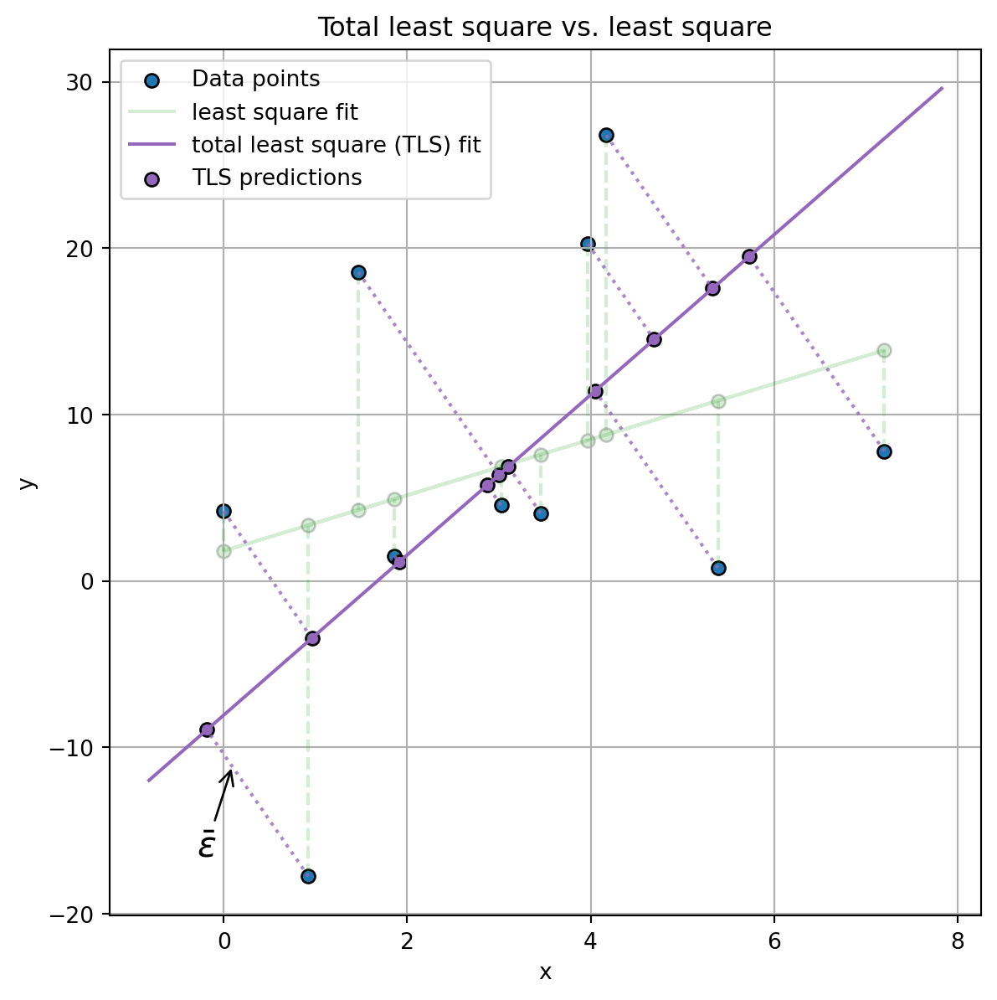

Linear regression, as discussed by Montgomery and Runger [1], stands out as a widely employed and intuitive machine learning model. Its primary objective is to establish a linear connection between a dependent variable (plotted on the y-axis) and one or more independent variables (plotted on the x-axis). The foundational formula for linear regression is represented as:
\(y\) is the dependent variable, often referred to as the response, target, or outcome variable.
\(x_k\) denotes the independent variables, also recognized as predictors or features.
\(w_k\) are the model parameters that define the linear relationship between the independent variables and the target. These coefficients signify the anticipated change in the dependent variable for a one-unit change in the respective independent variable, with all other variables held constant.
\(\epsilon\) represents the error term, accounting for the variability in \(y\) that can not be explained by linear model.
Assuming that the sole source of error in the model is the difference between the predicted outcome \(\hat{y}\) and the actual value \(y\) of the dependent variable, the learning process adjusts the parameters to minimize the error terms:
It’s important to note that the minimization described in Equation 3 entails minimizing the vertical distance between \(\hat{y}\) and \(y\), also knonw as residuals. Also, Equation 3 assumes that the only possible error is related to the model not accurately predicting the actual value, while the measurements of the independent variable are error-free.
Code
import numpy as npimport pandas as pdimport matplotlib.pyplot as pltfrom sklearn.linear_model import LinearRegressionn_datapoints =10np.random.seed(1)x =10* np.random.rand(n_datapoints)y =2* x +1+ (10* np.random.randn(n_datapoints))model = LinearRegression(fit_intercept=True)model.fit(x[:, np.newaxis], y)# get predictiony_pred = model.predict(x[:, np.newaxis])residual = y - y_pred# get prediction for best line fitxfit = np.linspace(0, 8, 50)y_ = model.predict(xfit[:, np.newaxis])fig, axs = plt.subplots(1, 2, figsize=(10.5, 4))ax = axs[0]ax.scatter( x, y, label="Data points", edgecolors="k",)# plot dataax.plot( [0, 8], [y.mean(), y.mean()], color="#ff7f0e", label="Initial fit",)for i inrange(len(x)): ax.plot( [x[i], x[i]], [y[i], y.mean()], color="gray", linestyle="--", )ax.grid(True)ax.set_xlabel("x")ax.set_ylabel("y")ax.legend()ax.set_title("Initial model")ax = axs[1]ax.scatter( x, y, label="Data points", edgecolors="k",)# plot best line fitax.plot( xfit, y_, color="#2ca02c", label="Best fit",)# Optionally, plot residuals (errors)for i inrange(len(x)): ax.plot( [x[i], x[i]], [y[i], y_pred[i]], color="gray", linestyle="--", )ax.scatter( x, y_pred, color="green", label="Predicted value") # If you want to show where the predicted points lie on the lineax.annotate("residual", xy=(1, -10), xycoords="data", xytext=(0.2, 0.1), textcoords="axes fraction", va="top", ha="left", fontsize=16, arrowprops=dict( arrowstyle="->", facecolor="black", ),)ax.grid(True)ax.set_xlabel("x")ax.set_ylabel("y")ax.set_title("Fited model")ax.legend()plt.show()
Figure 1: Linear model fitted to a given data distribution by means of least-square. Note that the differece between the predicted value and the given datapoint is known as residual.
Finally, it is crucial to highlight some key characteristics of this model type:
Linearity: There must be a linear relationship between the independent and dependent variables.
Independence: The predictors should be independent of each other. This is vital for the model’s stability and interpretability. Collinearity, or correlation between variables, can lead to significant changes in the outcome variable for minor alterations in the predictor variables, contradicting the assumption of a linear relationship. Additionally, a model with independent variables is easier to interpret as each variable contributes uniquely to the prediction.
Homoscedasticity: The residuals should be uniformly distributed with constant variance. Without this, it becomes challenging to ensure that the model is unbiased and to conduct accurate error analysis.
Least Square Estimation
As illustrated in Figure 1,a linear model seeks to find the line that minimizes the distance between the fitted line and the data points. While stochastic gradient descent is a viable optimization approach, a more concise solution based on linear algebra can be derived from Equation 3. Linear algebra provides a more general formulation that is robust with respect to the number of independent variables. This allows for a unified solution applicable to both the bivariate and multivariate cases. Considering a dataset composed of \(N\) elements, we can reformulate the loss function as follows:
\[
\begin{align}
\arg \min \mathcal{L}(y, \hat{y}) &= \sum_{i=1}^N(y_i - \hat{y}_i)^2 \\
& = \sum_{i=1}^N \big[ (\rvy - (\rmX \rvw))^2 \big]_i & \substack{\text{With an abuse of notation} \\ \text{we reduce over the row of this matrix}}\\
& = \sum_{i=1}^N \big[ \rvd^2 \big] \\
& = \rvd^T \rvd & \substack{\text{Note that row vector multiplied by} \\ \text{a column vector return a scalar}}\\
& = || \rvd ||^2
\end{align}
\tag{4}\]
where:
\(\rvy\) is the collumn vector \(\left[\begin{align} y_1 \\ \vdots \\ y_N \end{align}\right]\);
\(\rvw\) is the is the \(k+1\) column vector \(\left[\begin{align} w_0 \\ w_1 \\ \vdots \\ w_K \end{align}\right]\);
\(\rvd^T\) is the row vector \(\left[y_1 - \hat{y}_1, ..., y_N - \hat{y}_N\right]\).
It is then possible to compute the optimal paramters by differenciating w.r.t. \(\rvw\): \[
\begin{align}
\frac{\partial \mathcal{L}(\rvy, \hat{\rvy})}{\partial \rvw} = & \frac{\partial || \rvy - \rmX \rvw ||^2}{\partial \rvw} \\
& = 2\rmX^T (\rvy - \rmX \rvw) \\
& = 2 \rmX^T\rvy - 2 \rmX^T \rmX \rvw \\
& 2 \rmX^T \rmX \rvw = 2 \rmX^T\rvy & \substack{\text{The minumum of } \mathcal{L} \text{is given by} \\ \partial \mathcal{L} = 0 \text{ and solving by } \rvw}\\
& \rvw = \frac{\rmX^T\rvy}{\rmX^T \rmX}
\end{align}
\]
Note that \(\rmX^T \rmX\) is an \(K+1 \times K+1\) matrix; thus could be invertible, \(\rmX^T\rvy\) is an \(K+1 \times 1\) column vector and \(\rvw\) is the \(K+1 \times 1\) column vector of unknown parameters. Finally, this solution, known as ordinary least squares, is applicable to any model with a linear formulation concerning the model’s parameters, allowing for polynomial independent variables.
Residual Plot
Residuals plots [2][3] are one of the most common methods to validate the presence of Homoscedasticity. As shonw in Figure 2, residuals plots disply the residual values of a regression as a function of the predicted values and helps in understanding if the model is a good fit for the given data. Namelly residuals plot can be used for:
Checking Homoscedasticity: A key assumption in linear regression is that the residuals have constant variance at every level of the independent variable(s) (homoscedasticity). If the residuals fan out or form a pattern as the predicted values increase, this indicates heteroscedasticity, which can lead to inefficient estimates and affect hypothesis testing.
Identifying Non-Linearity: If the relationship between the variables is not linear, the residuals will often display a systematic pattern. A residuals plot can help identify such non-linear relationships, suggesting that a different model or a transformation of variables might be more appropriate.
Detecting Outliers: Residuals plots can reveal outliers – points that have a much larger error than the other observations. These outliers can disproportionately influence the model fit and can be indicative of data entry errors, or that the outlier is from a different population.
Evaluating Model Fit: If a model is a good fit for the data, the residuals should be randomly scattered around zero. Patterns or trends in the residuals suggest that the model is not capturing some aspect of the data, which could lead to biased or inaccurate predictions.
Checking Independence of Residuals: For a good model, the residuals should be independent of each other. If there’s a pattern over time (in time series data) or a pattern associated with another variable, this is a sign that the model is missing a key piece of information.
Verifying Normal Distribution of Residuals: In many forms of regression analysis (like linear regression), it’s assumed that residuals are normally distributed. By plotting the residuals and visually checking their distribution (or using statistical tests), we can validate this assumption. A common method is to use a Q-Q plot (quantile-quantile plot) to compare the distribution of the residuals to a normal distribution.
Figure 2: Residual plot. As you can see, the residual are simmetrically randomly distributed and in general, there aren’t any clear patterns. Moreover, the best-fit line to the residual is almost identical to the x-axis (y=0) indicating independence bewteen residuals and predicted values.
Total Least Squares
Total Least Squares (TLS), as outlined by [4], represents a distinctive approach within the realm of linear regression models. Its design is tailored to accommodate scenarios wherein errors not only impact the measurement of the dependent variable, represented by \(y\), but also extend to the independent variable, denoted as \(x\). Consequently, Total Least Squares proves especially valuable in situations where the assumption prevails that the measurement of \(x\) is subject to noise.
In contrast to the above mentioned approach of minimizing the error solely between \(y\) and \(\hat{y}\), as depicted in Figure 3, the TLS objective is to minimize the orthogonal distance between the given data points and the fitted line. In essence, TLS seeks the minimal perturbation to both the dependent and independent variables, ensuring the orthogonal distance between the fitted line and each data point is minimized.
As described in [5], any given line represented by the equation \(ax ~~ + ~~ by = 0\), the formalization of the orthogonal distance between this line and a specific point \((x_i, y_i)\) is expressed as follows:
It is worth noting that the vector parameterized by \(\left[a , b \right]\) must be perpendicular to the line \(ax + by\) to satisfy the equality constraint of the line formulation. Consequently, we can reasonably assume \(\sqrt{a^2 + b^2} = 1\), as the length of this vector does not impact orthogonality. This assumption allows for a more convenient formulation of Equation 5:
In this revised expression, the absolute value has been replaced by its squared counterpart, and a matrix formulation has been introduced for enhanced clarity. Finally, note that the model here proposed assume a centered dataset as the formulation \(ax + by = 0\) imposes the line to pass through the origin.
Code
import matplotlib.pyplot as pltfig, ax = plt.subplots(1, 1, figsize=(7, 7))# plot dataax.scatter( x, y, label="Data points", edgecolors="k",)# plot least square modelax.plot(x, y_pred, color="#2ca02c", label="least square fit", alpha=0.2)ax.scatter(x, y_pred, color="#2ca02c", edgecolor="k", alpha=0.2)# plot least square residuals (errors)for i inrange(len(x)): ax.plot( [x[i], x[i]], [y[i], y_pred[i]], color="#2ca02c", linestyle="--", alpha=0.2, )# TOTAL LEAST SQUARE# center datadef centering(Z: np.ndarray) -> np.ndarray: Z_min = Z.min(0) Z_max = Z.max(0) Z_norm = (Z - Z_min) / (Z_max - Z_min) Z_means = Z_norm.mean(axis=0, keepdims=True)def reverse_centering(Z_centered: np.ndarray) -> np.ndarray: Z_norm = Z_centered + Z_means Z = Z_norm * (Z_max - Z_min) + Z_minreturn Zreturn Z_norm - Z_means, reverse_centering# center the data, as we use a simplified modelZ = np.column_stack((x, y))Z_centered, reverse_centering = centering(Z)# total least square decompositione_val, e_vec = np.linalg.eig(Z_centered.T @ Z_centered)idx = e_val.argsort()[0]# get minimum eigenvectorsu = e_vec[:, idx]u = u[:, np.newaxis]# fitted line slope. Note that, as data is centered, the line passes through the originnegative_a_over_b = (-u[0] / u[1])[0]# generate data for better plot TLS fit lineZ_ = reverse_centering( np.column_stack( ( np.arange(-0.55, 0.7, 0.2)[:, np.newaxis], np.arange(-0.55, 0.7, 0.2)[:, np.newaxis].dot(negative_a_over_b), ) ))# plot TLS fitted lineax.plot( Z_[:, 0], Z_[:, 1], color="#9467bd", label="total least square (TLS) fit",)Z_centered_tls =-Z_centered.dot(u).dot(u.T)# get ortogonal value for X and YX_tls_error = Z_centered_tls[:, :-1]X_tls = Z_centered[:, 0][:, np.newaxis] + X_tls_errory_pred_tls = (X_tls).dot(negative_a_over_b)# reverse centering of adjusted matrixZ_centered_pred_tls = np.column_stack((X_tls, y_pred_tls))Z_pred_tls = reverse_centering(Z_centered_pred_tls)ax.scatter( Z_pred_tls[:, 0], Z_pred_tls[:, 1], color="#9467bd", edgecolor="k", label="TLS predictions",)for i inrange(len(x)): ax.plot( [Z[i, 0], Z_pred_tls[i, 0]], [Z[i, 1], Z_pred_tls[i, 1]], color="#9467bd", linestyle=":", alpha=0.8, )ax.annotate("$\\bar{\\epsilon}$", xy=(0.1, -11.0), xycoords="data", xytext=(0.1, 0.1), textcoords="axes fraction", va="top", ha="left", fontsize=16, arrowprops=dict( arrowstyle="->", facecolor="black", ),)ax.grid(True)ax.set_title("Total least square vs. least square")ax.set_xlabel("x")ax.set_ylabel("y")ax.legend()

Figure 3: Total least square. As it is possible to see, residuals line are orthogonal w.r.t. the fitted line. Moreover, the predictions are done for both x and y variables. This is in plain contrast with the traditional least square model shown in green colors.
Total Least Square Estimation
For a dataset comprising \(N\) elements, the loss function for Total Least Squares (TLS) is expressed as follows: \[
\begin{align}
\mathcal{L}(x, y; a, b) & = \sum_{i=1}^N (ax_i + by_i)^2 \\
& = \sum_{i=1}^N \bar{\epsilon}_i ^2 \\
& = \sum_{i=1}^N \left[ \begin{bmatrix} x_1 ~~ y_1 \\ x_j ~~ y_j \\ x_N ~~ y_N \end{bmatrix} \cdot \begin{bmatrix} a \\ b \end{bmatrix} \right]^2_i \quad \substack{\text{With an abuse of notation, a sum reduction operation} \\ \text{is applied to all the rows of the matrix}} \\
& = \sum_{i=1}^N \left[ \rmZ \cdot \rvu \right]^2_i \\
& = \left[ \rmZ \cdot \rvu \right]^T \cdot \left[ \rmZ \cdot \rvu \right] \quad \substack{\text{The sum of squared values of a column vector is obtained by} \\ \text{the matrix multiplication with the transpose column vector.}}\\
& = || \rmZ \cdot \rvu ||^2
\end{align}
\tag{7}\]
As before, optimization of Equation 7 involves computing its derivative with respect to the model parameters analytically. However, to prevent the degenerate solution \(\rvu = 0\) and adhere to the previous assumption \(||\rvu||^2 = 1\), Total Least Squares optimization becomes a constrained problem:
While various methods exist for solving constrained optimization problems, Lagrangian multipliers [6] offer a common approach, transforming Equation 8 into a continuous optimization problem:
Here, \(\lambda\) acts as an additional parameter, known as the Lagrange multiplier, to be optimized. The analytical differentiation of Equation 9 yields:
By combining Equation 11 into Equation 10 we obtain: \[
\begin{align}
\rvu^T (\rmZ^T \cdot \rmZ) \rvu & = -\lambda \rvu^T \rvu \quad \substack{\text{By left-multiply } \rvu^T \text{ on both side.}} \\
(\rvu^T \rmZ^T) \cdot (\rmZ \rvu) & = -\lambda \\
\left[ \rmZ \rvu \right]^T \cdot \left[ \rmZ \rvu \right] & = -\lambda \\
|| \rmZ \rvu ||^2 & = -\lambda \quad \substack{\text{The original objective of Equation 7.}}
\end{align}
\tag{12}\]
From Equation 10, we deduce that \(\rvu\) and \(\lambda\) must be an eigenvector and eigenvalue of a \(2 \times 2\) matrix, specifically \(\rmZ^T \rmZ\). Moreover, Equation 12 establishes that \(\lambda\) is equal to the original loss function aimed to be minimized in Equation 7. Consequently, the estimated optimal parameters for a Total Least Squares model are equivalent to the eigenvector associated with the smallest eigenvalue of the matrix \(\rmZ^T \rmZ\).
Robust Linear Model
Real-world datasets frequently encounter multicollinearity among independent variables. One effective approach to address this issue is through Ridge Regression, characterized by the formula:
Ridge Regression essentially augments linear regression with a penalty term, where this term consists of the squared coefficients of the model. Consequently, it minimizes the magnitude of the coefficients, introducing a bias to the model but simultaneously reducing prediction variance by imposing a normal distribution prior on the model parameters.
The derivative of the loss defined in Equation Equation 3 for a Ridge Regression model can be expressed as:
Equation 14 illustrates that Ridge Regression is akin to linear regression but with smaller-weighted coefficients. Additionally, due to its quadratic formulation, Ridge Regression ensures that no model weights are zeroed out, making it a preferable choice when a dense model is desidered.
Lasso Regression another widely employed variant of linear regression, incorporates a penalty term into the linear model’s loss function. Unlike Ridge Regression, Lasso minimizes the absolute values of the coefficients: \[
y = \epsilon + w_0 + w_1 x_1 + ... + w_K x_K + \lambda \sum_{1 \leq k \leq K} |w_k|.
\]
The weight update for Lasso Regression is computed as:
The differentiation of the absolute value function poses challenges when \(w_k = 0\) as it is not defined. However, an approximate solution of Equation 15 is defined by case:
From Equation 16, it is evident that Lasso Regression can drive some coefficients to zero, resulting in a sparse model. In contrast to Ridge Regression, which merely reduces coefficients to values near zero, Lasso Regression is a favorable choice when a sparse model is desired or when feature selection is necessary.
Parameter’s Analysis
There are instances when we seek to comprehend how one of our predictors influences the dependent variable. Specifically, our interest lies in determining whether the parameter \(w_i\) significantly affects the response variable \(y\) - that is, whether including the predictor \(x_i\) leads to a notable reduction in the model’s loss.
Formally, this involves testing the following hypotheses:
For clarity, let’s denote \(\mathcal{L}(y, \hat{y}: \rvw^T_{\not i})\) and \(\mathcal{L}(y, \hat{y}: \rvw^T)\) as the sum of squared residuals for models excluding and including the \(i\)-th predictor, respectively. Assuming independence and homoscedasticity of the model’s parameters, the significance of the \(i\)-th predictor can be assessed using the F-test:
Here, \(p\) and \(p_2\) represent the degrees of freedom for the overall model and the model containing only the \(i\)-th predictor; while \(N\) is the number of training examples. The numerator of \(F\)-test represents the reduction in the residual sum of squares per additional degree of freedom utilized. The denominator is an estimate of the residual variance, serving as a measure of the model’s inherent noise. An \(F\)-ratio of one suggests that the predictors merely contribute noise. A ratio greater than one implies meaningful contribution, or signal, from the predictors. Typically, we reject \(H_0\) and conclude that the \(i\)-th variable significantly impacts the response if the \(F\)-statistic exceeds the 95th percentile of the \(F\)-distribution. A full derivation of this result is available here.
R-squared
The \(R^2\) metric, also known as the coefficient of determination, is a statistical measure used to assess the goodness of fit of a regression model. It represents the proportion of the variance in the dependent variable that is predictable from the independent variables. In simpler terms, \(R^2\) indicates how well the data fit the regression model (the closer the value of \(R^2\) is to 1, the better the fit) and can be computed as:
here \(\mathcal{L}(y, \hat{y}: \varnothing)\) represent the sum of squared residuals of a model wihtout parameters, a.k.a a model that alwasy predict the mean of the response variable. Similarly, \(\mathcal{L}(y, \hat{y}: \rvw^T)\) is the linear regression developed.
The \(R^2\) value ranges from 0 to 1. A vale of 0 means that the model does not explain any of the variability of the response data around its mean. On the other hand, an \(R^2\) of 1 indicates that the model explains all the variability of the response data around its mean. In conclusion \(R^2\) is a simple to compute, yet informative metric to determin how much our variance our model is able to predict correctly.
Improvements
In general it is possible to rank the model performance in terms of \(\mathcal{L}\). Thus, here are useful methods to reduce the sum of squared residuals:
Feature Selection: Choose relevant and significant variables to include in the model.
Transformation of Variables: Apply transformations (like log, square root, or inverse) to make the relationship more linear.
Polynomial Regression: Use higher-order terms (quadratic, cubic, etc.) if the relationship is not purely linear.
Interaction Terms: Include interaction terms if the effect of one variable depends on another. An interaction variable in a linear model represents the combined effect of two or more variables on the dependent variable, where the effect of one variable depends on the level of another variable. In other words, it’s used to capture situations where the relationship between a predictor and the outcome changes based on the value of another predictor. Formally, an interaction variable in alinear model is defined as: